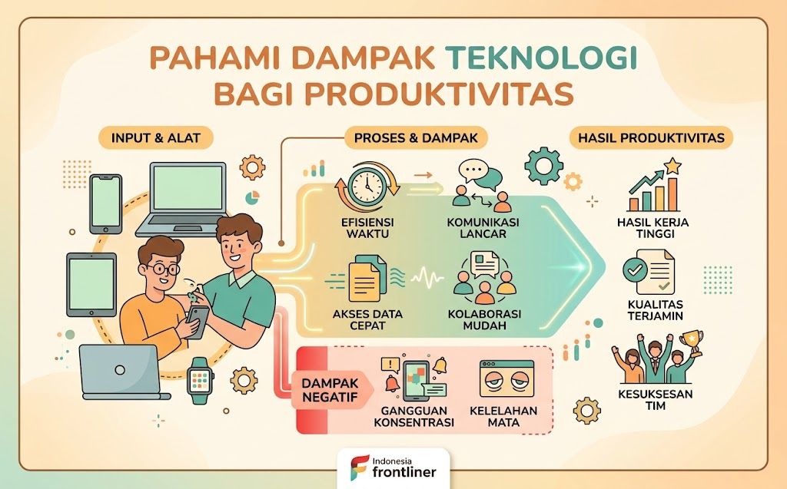

🌐 Dampak Sosial Informatika
Jelajahi enam topik penting tentang bagaimana teknologi memengaruhi kehidupan sosial kita. Klik kartu untuk mempelajari lebih dalam.

#1 Pahami Dampak Teknologi bagi Produktivitas Dampak Sosial Informatika
#2 Kolaborasi Dunia Maya & Etika Berbagi Dampak Sosial Informatika

#3 Terbuka Informasi, Bijak Memilah Data Pribadi Dampak Sosial Informatika

#4 Media Sosial: Manfaat, Risiko, & Kajian Kritis Dampak Sosial Informatika

#5 Cyberbullying: Kenali, Antisipasi, & Cegah Dampak Sosial Informatika

#6 Jaga Keamanan Data Diri dari Kejahatan Digital Dampak Sosial Informatika